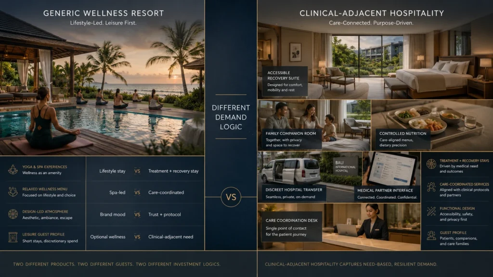
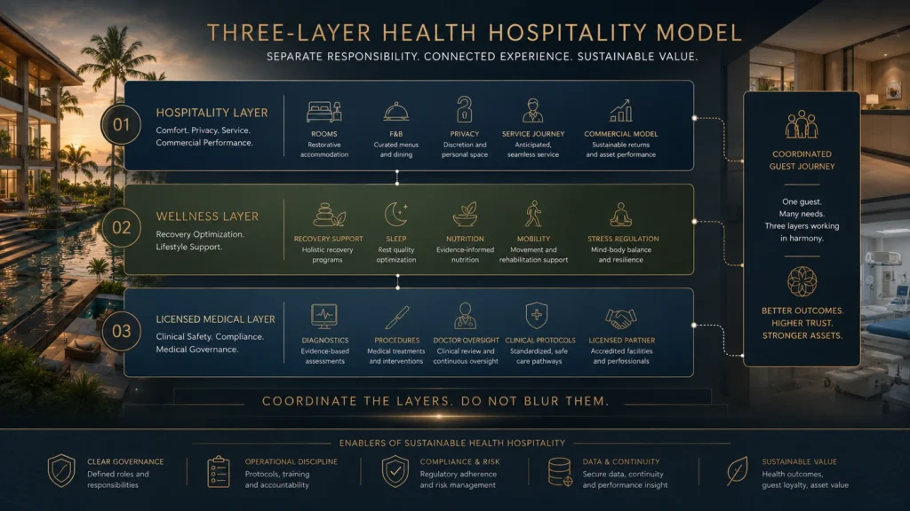
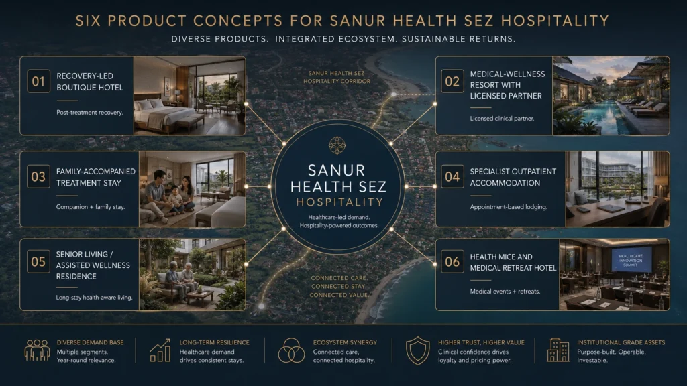
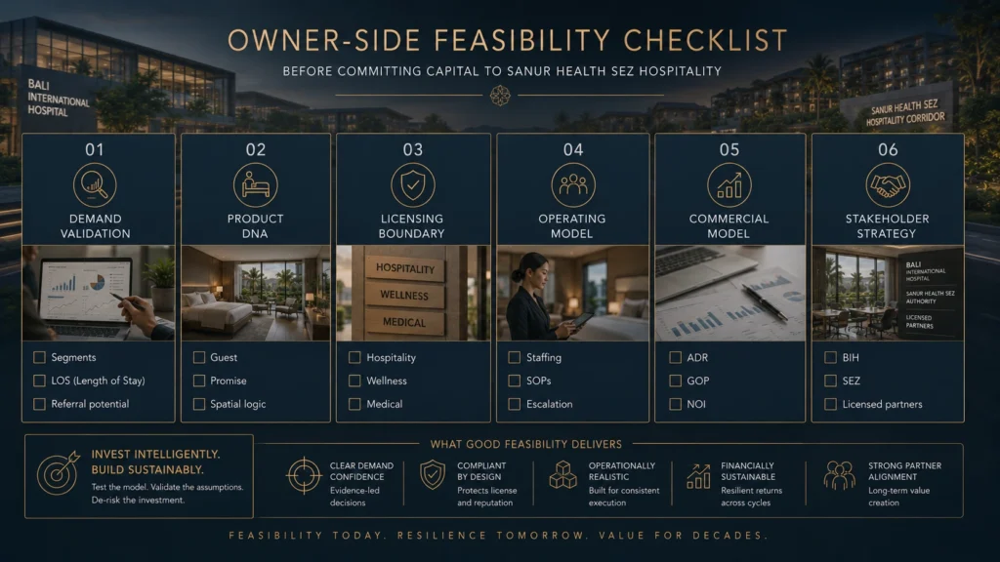

Sanur Health SEZ hospitality is not just another Bali infrastructure story. It is a new demand anchor that changes the logic for hospitality development around Sanur, Denpasar, and parts of South Bali.
The mistake would be to read it as a simple “wellness tourism” opportunity. The real Sanur Health SEZ hospitality opportunity is narrower, more operational, and more commercially demanding: clinical-adjacent hospitality built around treatment journeys, recovery stays, family-accompanied care, medical-wellness credibility, and licensed healthcare partnerships.
This article is written for owners, investors, developers, operators, asset managers, and family offices assessing whether the Sanur Health SEZ creates a real hospitality opportunity - and what must be proven before capital is committed.
Key Takeaways
- The Sanur Health SEZ is a legally established health-and-tourism special economic zone in South Denpasar, with health and tourism defined as its business activities under Government Regulation PP No. 41/2022.
- Bali International Hospital is the anchor asset, but the Sanur Health SEZ hospitality opportunity is not automatic. It depends on referral trust, care logistics, operating model, licensing boundary, and product-market fit.
- Generic wellness resorts are unlikely to capture the full opportunity unless they can prove clinical credibility, recovery logic, patient suitability, and partnership structure.
- The most investable opportunities are likely to sit in clinical-adjacent accommodation, recovery hospitality, family-accompanied treatment stays, specialist outpatient lodging, and medical-wellness concepts with licensed partners.
- Before development, investors need an owner-side feasibility study that tests demand segments, Product DNA, licensing exposure, staffing model, CAPEX logic, and commercial assumptions.
Why Sanur Health SEZ Hospitality Matters Now
The Sanur Health SEZ is one of the most important hospitality-adjacent infrastructure developments in Bali in the last decade. It creates a defined healthcare corridor in a market that has historically been dominated by leisure, villa, lifestyle, beach, yoga, spa, and retreat products.
The SEZ is not a normal tourism district. Government Regulation PP No. 41/2022 established the Sanur Special Economic Zone with an area of 41.26 hectares in South Denpasar, Bali, and defines the zone’s business activities as health and tourism.
AECOM describes the project as a 42-hectare beachfront resort setting with a vision to provide world-class healthcare and a wellness resort, including design guidance for Bali International Hospital together with the Mayo Clinic Care Network. See the AECOM Sanur Health & Wellness Tourism Special Economic Zone project page.
The national importance is also clear. President Prabowo Subianto officially inaugurated the Sanur SEZ and Bali International Hospital on 25 June 2025 in Denpasar, according to the Cabinet Secretariat of the Republic of Indonesia.
The government’s logic is not only tourism growth. It is healthcare self-reliance, reduced outbound medical spending, and improved medical infrastructure.
That matters for hospitality investors because health infrastructure changes the demand map. It creates new accommodation needs that do not behave like normal leisure demand.
For investors evaluating Bali hotel development more broadly, this is exactly why a normal market study is not enough. A serious hotel feasibility study in Bali must test whether the product, operating model, guest journey, and commercial logic actually match the demand source.
What Sanur Health SEZ Hospitality Actually Means
The Sanur Health SEZ is Indonesia’s first integrated health-and-tourism zone. ANTARA describes it as a national strategic project designed to host modern integrated facilities, including internationally certified medical services, hotel and MICE accommodation, and a health research center. See ANTARA’s report on the Sanur SEZ and fertility center development.
Its healthcare anchor is Bali International Hospital. Public information from Bali International Hospital describes BIH as a world-class healthcare facility in Sanur with 255 beds, 38 intensive care units, 8 operating rooms, 4 catheterization labs, and 5 centers of excellence.
The SEZ is also developing an institutional ecosystem around the hospital. The Indonesia Investment Authority reported that Bali International Hospital introduced international medical partners, health experts, and clinicians in the Sanur SEZ, with BIH positioned as a medical tourism and referral destination serving patients from Indonesia and abroad. See the INA article on Bali International Hospital’s global partnerships.
This creates a different type of hospitality opportunity.
A normal hotel asks:
Who wants to stay in Sanur?
A health-hospitality asset must ask:
Who needs to stay near care, for what procedure, for how long, with what mobility, privacy, family, nutrition, nursing, transport, and risk requirements?
That is a fundamentally different product question.
The Core Problem in Sanur Health SEZ Hospitality
The common investor reading is simple: Sanur has a new hospital, therefore nearby land and hotels should benefit.
That may be directionally true, but it is not specific enough to support a serious hospitality investment thesis. The Sanur Health SEZ does not automatically make every nearby hotel, villa, or wellness resort commercially stronger.
The demand will not be evenly distributed. It will flow toward assets that solve the operational problems created by medical travel.
For example, a post-procedure guest may need:
- step-free access;
- privacy;
- quiet rooms;
- family accommodation;
- controlled nutrition;
- clinical transfer protocols;
- wheelchair-friendly bathrooms;
- nurse-call logic or partner support;
- infection-control awareness;
- proximity to follow-up appointments;
- discreet service standards;
- emergency escalation procedures.
A normal boutique hotel is rarely designed around these requirements. A wellness resort with yoga, spa, detox drinks, and a beautiful pool is also not automatically suitable.
Zenith view: the market gap is not “more wellness.” The gap is credible recovery-led hospitality with a clearly defined boundary between hospitality, wellness, and licensed medical care.
This is also why investors should be careful with health and wellness claims. A Bali wellness asset that markets clinical services without the correct licensing, governance, and claim discipline can create silent liability. For a deeper breakdown of this risk, see Zenith’s article on Bali wellness resort compliance.

What Owners and Investors Get Wrong About Sanur SEZ Hotel Opportunity
Mistake 1: Confusing Wellness Demand With Medical-Adjacent Demand
Wellness demand is discretionary. Medical-adjacent demand is often need-based, time-sensitive, and trust-sensitive.
A guest booking a wellness retreat may compare views, design, spa menu, yoga schedule, and brand mood.
A patient, companion, or family office arranging care may compare doctor access, transfer safety, recovery suitability, privacy, infection risk, nutrition, language support, and emergency escalation.
That difference affects the entire asset.
| Planning Question | Generic Wellness Resort | Clinical-Adjacent Hospitality |
|---|---|---|
| Primary guest logic | Transformation, rest, lifestyle, retreat | Treatment, recovery, diagnostics, family support |
| Trust driver | Brand, design, reviews, wellness talent | Medical partner, protocols, safety, proximity |
| Space logic | Spa, yoga, pool, restaurant, view | Accessible rooms, recovery suites, quiet zones, clinical interface |
| Staff logic | Hospitality and wellness practitioners | Hospitality, care coordination, licensed clinical partners |
| Revenue logic | Packages, spa spend, F&B, retreats | LOS, companion stays, recovery packages, medical partner pathways |
| Main risk | Overpromising wellness outcomes | Medical liability, claim compliance, emergency response |
The mistake is building the first model while expecting demand from the second.
Mistake 2: Assuming BIH Automatically Creates Referral Flow
A hospital anchor can create demand, but it does not guarantee referrals to independent hotels. Medical providers will not risk patient trust by sending guests to poorly prepared accommodation.
To win credible demand, an asset must answer basic questions:
- Is the guest journey medically safe?
- Who is responsible if the patient deteriorates?
- Are medical acts performed only by licensed providers?
- Are claims legally compliant?
- Are staff trained for post-treatment hospitality?
- Is there a formal relationship with a licensed medical partner?
- Is the facility designed for limited mobility and privacy?
Without these answers, the property remains a hotel near a hospital, not a health-hospitality asset.
This is where owner-side governance becomes important. A lawyer may protect transaction documents, but an owner’s representative for Bali hotel investors helps protect the operating thesis after land, design, operator, and pre-opening decisions begin.
Mistake 3: Treating SEZ Status as a Substitute for Product Strategy
SEZ status may create incentives, licensing convenience, investment attention, and infrastructure value.
Indonesia’s general SEZ framework under PP No. 40/2021 provides for facilities and conveniences covering taxation, customs and excise, goods traffic, manpower, immigration, land, spatial planning, business licensing, and other areas. Eligibility and application depend on the specific project and legal structure.
But incentives do not fix a weak product.
A poorly defined hotel with unclear demand, wrong room mix, no clinical credibility, and weak operating standards will still underperform.
SEZ infrastructure creates the possibility. Product DNA determines whether the hospitality asset can capture it.

The Zenith View on Sanur Health SEZ Hospitality
The Zenith view is straightforward: Sanur Health SEZ hospitality should be treated as a demand-zone infrastructure opportunity, not a generic tourism uplift story.
The opportunity is not simply to build more rooms in Sanur. It is to create hospitality products that solve specific patient, companion, family, and medical-wellness journeys.
This requires a three-layer model.
| Layer | Role | Owner / Operator Question |
|---|---|---|
| Hospitality layer | Stay, service, rooms, F&B, privacy, guest journey, commercial model | Can the asset operate profitably and consistently? |
| Wellness layer | Recovery support, sleep, nutrition, mobility, stress regulation, non-medical programming | Does the wellness offer support the stay without making medical claims? |
| Licensed medical layer | Diagnostics, procedures, medical supervision, clinical treatment, doctor/nurse scope | Which licensed partner is responsible, and where is the legal boundary? |
The strongest concepts will not blur these layers. They will coordinate them.
That is where many Bali wellness projects fail. They use medical language without medical governance, or they add clinical services without designing the operating model, licensing structure, SOPs, consent process, emergency pathway, insurance logic, or staffing plan.
For Sanur-adjacent hospitality, this is not a branding issue. It is an asset-risk issue.
It is also a Product DNA issue. The concept must define the guest, promise, journey, spatial logic, operating reality, and commercial model before architecture moves too far. This is the same principle Zenith applies in Product DNA and concept development for hospitality assets where the operating thesis must lead the design.

Product Framework for Sanur Health SEZ Hospitality Concepts
Not every hospitality product near Sanur SEZ should become a “medical hotel.” The right concept depends on location, site size, ownership structure, CAPEX appetite, licensing pathway, and target demand.
1. Recovery-Led Boutique Hotel
A recovery-led boutique hotel is designed for guests who need calm, privacy, comfort, and predictable service before or after treatment.
Best-fit demand:
- post-procedure recovery;
- outpatient follow-up;
- family-accompanied care;
- longer-stay diagnostic or oncology visits;
- orthopedic recovery;
- aesthetic or dental recovery where clinically appropriate.
Critical requirements:
- accessible room inventory;
- quiet guest floors;
- recovery menus;
- trained guest relations team;
- medical partner escalation;
- discreet transport;
- clear non-medical positioning unless licensed services are present.
Zenith assessment: potentially strong if the property has proximity, operational discipline, and formal clinical partnership. Weak if it is only a normal hotel with “wellness recovery” marketing.
2. Medical-Wellness Resort With Licensed Partner
This model combines hospitality, wellness, diagnostics, and recovery programming, but only where medical services are delivered by licensed clinical providers.
Best-fit demand:
- executive health checks;
- longevity baseline programs;
- metabolic reset;
- stress and burnout recovery;
- sleep and nervous-system programs;
- preventive medical wellness.
Critical requirements:
- separate hospitality and clinical responsibilities;
- licensed clinical partner;
- compliant medical claims;
- medical director or partner governance where required;
- clear consent and guest data protocols;
- integrated but legally clean guest journey.
Zenith assessment: attractive for premium positioning, but high-risk if the owner does not understand the boundary between hospitality programming and regulated medical care.
3. Family-Accompanied Treatment Stay
Medical travel is rarely only about the patient. Many guests arrive with spouses, adult children, parents, assistants, or caregivers.
Best-fit demand:
- oncology;
- fertility;
- cardiology;
- neurological assessment;
- complex diagnostics;
- chronic disease review;
- second-opinion visits.
Critical requirements:
- connecting rooms or family suites;
- kitchenette or controlled dining options;
- privacy;
- long-stay pricing logic;
- transport reliability;
- multilingual support;
- concierge coordination.
Zenith assessment: under-discussed but commercially important. Family-accompanied demand can support suite inventory, extended stay logic, and higher total account value.
4. Specialist Outpatient Accommodation
Some demand will not require full recovery infrastructure but will need convenient, reliable short-stay accommodation near appointments.
Best-fit demand:
- diagnostic testing;
- fertility cycles;
- imaging;
- oncology consultation;
- day procedures;
- follow-up visits;
- annual executive health checks.
Critical requirements:
- flexible check-in/check-out;
- appointment-aware transport;
- quiet rooms;
- breakfast and fasting-friendly food logic;
- short-stay packages;
- predictable service.
Zenith assessment: commercially viable if built around appointment flow and convenience, not resort fantasy.
5. Senior Living / Assisted Wellness Residence
Bali’s lifestyle appeal and the Sanur medical anchor could support premium senior-oriented stays, but this category requires extreme caution.
Best-fit demand:
- long-stay wellness living;
- active aging;
- assisted lifestyle;
- health-aware retirement stays;
- family-sponsored senior care.
Critical requirements:
- licensing review;
- clinical partnership;
- accessibility;
- emergency protocols;
- trained staff;
- insurance and liability clarity;
- strong owner governance.
Zenith assessment: potentially attractive, but not a simple hotel or villa play. This is an operating business with staffing, liability, care standards, and long-stay economics.
6. Health MICE and Medical Retreat Hotel
The SEZ also creates a possible base for medical conferences, health education, wellness summits, professional training, and corporate health retreats.
Best-fit demand:
- medical congresses;
- hospital partner events;
- corporate wellness retreats;
- health investor meetings;
- clinical education programs;
- health-tech and longevity events.
Critical requirements:
- meeting infrastructure;
- credible health positioning;
- medical and wellness programming partners;
- F&B suitable for professional and health audiences;
- strong B2B sales.
Zenith assessment: relevant as a secondary revenue layer, not necessarily as the sole investment thesis.
Operational Implications for Sanur Health SEZ Hospitality
Clinical-adjacent hospitality requires a different operating system from normal Bali leisure hospitality.
1. Guest Journey Must Be Built Around Treatment Logic
A normal hotel journey starts with arrival, rooming, leisure, F&B, and departure.
A clinical-adjacent journey may begin before travel, with medical appointments, fasting requirements, documents, mobility needs, companion planning, and anxiety reduction.
The operator must define:
- pre-arrival medical logistics interface;
- airport and hospital transfer protocol;
- family and companion flow;
- room allocation logic;
- dietary restrictions;
- appointment timing;
- emergency escalation;
- discharge and post-stay follow-up.
2. Staff Training Must Change
Staff do not need to become medical personnel. But they do need training in:
- privacy;
- dignity;
- mobility assistance boundaries;
- escalation rules;
- non-medical language;
- distressed family handling;
- quiet-service standards;
- post-procedure sensitivity;
- what they must never promise.
This is especially important during pre-opening. A health-hospitality concept cannot wait until soft opening to define service standards, partner interfaces, escalation logic, or claims control. For more on this readiness logic, see Zenith’s guide to Bali hotel pre-opening strategy.
3. Space Planning Must Change
Design needs to account for:
- elevator and corridor widths;
- wheelchair access;
- bathroom safety;
- low-noise zones;
- companion sleep;
- privacy from public resort areas;
- vehicle drop-off;
- discreet back-of-house movement;
- controlled F&B delivery;
- separation between leisure guests and recovery guests where needed.
The issue is not whether the property looks premium. The issue is whether the property can support the stay logic without operational friction.
4. Claims and Marketing Must Be Controlled
A property can market comfort, proximity, privacy, recovery-supportive hospitality, nutrition, rest, and coordination.
It should not make unsupported medical claims, imply treatment outcomes, or market licensed services unless those services are delivered under the correct medical governance.
This is particularly important in Bali, where wellness marketing often moves faster than licensing discipline.
Commercial Implications for Sanur Health SEZ Hospitality Investors
The Sanur Health SEZ can support premium hospitality concepts, but only if the commercial thesis is built correctly.
1. ADR Potential Must Be Proven by Segment
Health-hospitality guests may pay a premium for trust, privacy, comfort, proximity, and recovery suitability.
But that does not mean every asset can charge a premium.
ADR must be tested by segment.
| Segment | Possible ADR Logic | Main Risk |
|---|---|---|
| Post-procedure recovery | Higher willingness to pay for comfort and privacy | Needs clinical trust and referral channel |
| Family-accompanied treatment | Suite and long-stay potential | Requires family-friendly room logic |
| Executive diagnostics | Premium short-stay package potential | Requires brand credibility |
| Fertility / women’s health | Repeated visit potential | Requires sensitivity and privacy |
| Medical MICE | Group revenue and shoulder demand | Needs B2B sales pipeline |
| Generic wellness guest | Existing Bali demand | More competitive and less differentiated |
The key point: ADR is not created by proximity alone. It is created by solving a higher-value problem better than generic accommodation.
2. Occupancy May Behave Differently From Leisure Demand
Medical-adjacent demand may be less seasonal than pure leisure, but it is also more dependent on referral pathways, hospital capacity, specialist schedules, treatment cycles, and medical reputation.
Investors should avoid applying normal resort occupancy assumptions without adjustment.
This is where family offices and institutional investors need discipline. The opportunity may be attractive, but it still requires underwriting logic. Zenith has written separately about how family office hospitality investment should separate lifestyle appeal from asset performance.
3. CAPEX Needs a Different Justification
Clinical-adjacent hospitality may require more investment in accessibility, acoustic comfort, room functionality, privacy, transport, staff areas, and operational systems.
That CAPEX must be justified by:
- longer length of stay;
- higher suite capture;
- stronger direct/referral mix;
- repeat treatment demand;
- companion spend;
- lower OTA dependency;
- defensible positioning.
Without that logic, the owner may spend more capital without creating a stronger investment thesis.
4. The Contracting Model Matters
Owners must decide whether the property is:
- a normal hotel with health-aware positioning;
- a hotel with medical partner services;
- a licensed clinic-hotel hybrid;
- a recovery residence;
- a wellness resort with separate clinical operator;
- a JV or concession inside the SEZ ecosystem.
Each model has different implications for liability, staffing, insurance, revenue share, licensing, marketing claims, and operator obligations.
This is not only a design decision. It is a governance decision.

What To Check Before Committing Capital to Sanur Health SEZ Hospitality
Before acquiring land, redesigning an asset, or launching a hospitality concept near Sanur SEZ, investors should complete a focused owner-side review.
1. Demand Validation
Check:
- target treatment segments;
- expected stay patterns;
- companion demand;
- length-of-stay assumptions;
- source markets;
- referral feasibility;
- direct booking potential;
- relationship with BIH, clinics, or medical partners.
2. Product DNA
Define:
- target guest or patient-adjacent profile;
- emotional promise;
- commercial promise;
- room logic;
- service model;
- F&B logic;
- wellness boundary;
- clinical boundary;
- brand language.
3. Licensing and Compliance Boundary
Clarify:
- what is hospitality;
- what is wellness;
- what is medical;
- who holds the medical license;
- who employs clinical staff;
- who owns patient data;
- who carries liability;
- what claims can be made publicly.
4. Operating Model
Build:
- staffing plan;
- SOP architecture;
- emergency escalation;
- partner interface;
- clinical handover rules;
- transport protocols;
- pre-opening readiness gates;
- quality control and reporting.
5. Commercial Model
Model:
- ADR by segment;
- length of stay;
- occupancy by demand type;
- GOP and NOI logic;
- payroll ratio;
- partner revenue share;
- direct versus OTA mix;
- pre-opening cost;
- ramp-up period;
- downside scenario.
6. Stakeholder Strategy
Identify whether the opportunity requires engagement with:
- SEZ management;
- InJourney / HIN;
- IHC / BIH;
- INA;
- Ministry of Health-related processes;
- licensed clinics;
- medical specialists;
- insurers;
- travel facilitators;
- corporate health buyers.
The point is not to create a complicated document. The point is to avoid a beautiful asset with the wrong operating thesis.
FAQ
What is the Sanur Health SEZ?
The Sanur Health SEZ is a special economic zone in South Denpasar, Bali, established under PP No. 41/2022. It covers 41.26 hectares and is legally positioned around health and tourism activities. Its anchor is Bali International Hospital, supported by a broader health, wellness, hospitality, MICE, and research ecosystem. For hospitality investors, the important point is that the SEZ creates a healthcare demand corridor, not simply another tourism district.
What is the Sanur Health SEZ hospitality opportunity?
The Sanur Health SEZ hospitality opportunity is the development or repositioning of accommodation that can credibly serve health-related demand near the SEZ. This may include recovery-led boutique hotels, family-accompanied treatment stays, specialist outpatient lodging, medical-wellness resorts with licensed partners, or long-stay health-aware residences. The opportunity is not generic hotel development. It requires product-market fit, operating discipline, licensing clarity, and clinical-adjacent credibility.
Does the Sanur Health SEZ automatically make nearby hotels more valuable?
Not automatically. The SEZ may improve market attention, infrastructure relevance, and demand potential, but value uplift depends on location, product fit, operating model, access, room design, clinical partnership, and referral trust. A generic hotel near BIH may benefit from general compression demand, but it will not necessarily capture recovery, treatment, diagnostic, or family-accompanied medical demand without the right product and governance.
What kind of hospitality product is most relevant near Sanur SEZ?
The strongest opportunities are likely to be clinical-adjacent rather than generic wellness: recovery-led boutique hotels, specialist outpatient accommodation, family-accompanied treatment stays, medical-wellness resorts with licensed partners, and possibly senior-oriented or health-aware long-stay residences. The right product depends on site conditions, licensing pathway, medical partner access, capital budget, and target demand.
Can a normal wellness resort serve medical tourism demand?
Only partially. A wellness resort can serve prevention, rest, stress recovery, and lifestyle-driven demand, but medical tourism requires more than spa programming. If the concept involves diagnostics, IV therapy, clinical supplements, procedures, medical supervision, or recovery claims, the owner must define the licensed medical layer, partner structure, liability boundary, consent process, and claim compliance.
What should investors check before developing near Sanur SEZ?
Investors should test demand segments, patient and companion stay patterns, proximity logic, partnership pathways, licensing exposure, room mix, accessibility, staffing, medical escalation, ADR assumptions, operating cost, and direct/referral channel potential. The main question is not “is Sanur growing?” The question is whether the proposed asset can credibly serve the health-hospitality demand created by the SEZ.
Is this opportunity only for large developers?
No. Large developers may be better positioned for integrated mixed-use or SEZ-linked projects, but smaller owners can still reposition boutique hotels, villas, or serviced residences if the concept is disciplined. Smaller assets may be suitable for recovery-led stays, family-accompanied accommodation, or specialist outpatient lodging. The constraint is not only size; it is credibility, operating discipline, and partnership structure.
Summary Takeaways
- The Sanur Health SEZ is a structural shift for Bali hospitality, but the opportunity is specific, not generic.
- Bali International Hospital creates a medical anchor, but hospitality demand must still be earned through product fit, trust, and operating execution.
- The strongest opportunities are likely to sit in recovery-led, clinical-adjacent, family-accompanied, and medical-wellness hospitality.
- Owners should avoid vague “wellness” positioning if the demand signal points toward treatment, diagnostics, recovery, and healthcare logistics.
- A serious Sanur Health SEZ hospitality feasibility review must test not only land and market, but also licensing boundary, partner model, guest journey, staffing, CAPEX, ADR, length of stay, and referral channels.
CTA
If you are evaluating land, a hotel, villa complex, wellness resort, or mixed-use project near Sanur, Denpasar, or the wider South Bali health corridor, Zenith Hospitality Global can help assess whether the opportunity is commercially real.
Commission an owner-side Sanur Health SEZ hospitality feasibility and Product DNA review before committing to acquisition, design development, or repositioning.
Start a conversation